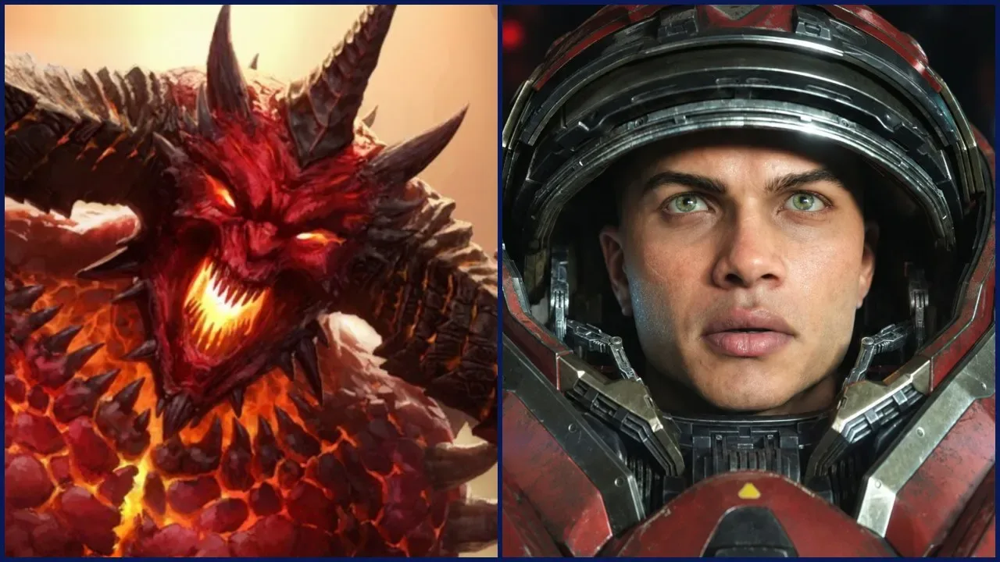

Luiso · 14 de septiembre de 2026 · 4 min de lectura
La vuelta de la BlizzCon después de tres años no decepcionó. Blizzard Entertainment aprovechó la ceremonia inaugural de su gran evento para anunciar dos nuevos juegos que cambian radicalmente el futuro de algunas de sus franquicias más importantes: Diablo V y un nuevo StarCraft.
Los dos proyectos todavía están a varios años de distancia, pero las decisiones tomadas por Blizzard son lo suficientemente importantes como para convertirlos en dos de los anuncios más llamativos de la industria durante 2026.
El primero llegará en primavera de 2029. El segundo, en 2030.
El nuevo capítulo de la saga de acción y rol parte de una situación inédita para la franquicia.
Santuario cayó. Diablo ganó.
Blizzard confirmó que Diablo V transcurrirá en un mundo en el que los héroes ya fueron derrotados y el Señor del Terror consiguió aquello que durante toda la saga intentaron impedir.
La compañía no mostró gameplay, pero el primer adelanto establece una dirección mucho más oscura para esta nueva entrega.
En lugar de volver a plantear otra batalla para impedir el apocalipsis, Diablo V parte de las consecuencias de una derrota. El mundo ya está perdido y los jugadores deberán descubrir qué significa convertirse en héroes cuando el mal ya consiguió imponerse.
El juego llegará en primavera de 2029, apenas seis años después de Diablo IV, un intervalo considerablemente menor al que existió entre las anteriores entregas principales.
Blizzard tampoco está abandonando Diablo IV. La compañía anunció nuevos contenidos para el juego, incluyendo el regreso de la clase Amazona durante la primera mitad de 2027, mientras que Diablo IV también llegará a Nintendo Switch 2 el 15 de septiembre de 2026.
Si Diablo V era un anuncio esperado por buena parte de la comunidad, el regreso de StarCraft tomó a prácticamente todos por sorpresa.
Blizzard confirmó un nuevo juego simplemente titulado STARCRAFT, pero no se trata de StarCraft III.
La compañía está llevando la franquicia hacia un género completamente diferente: será un shooter de mundo abierto.
El proyecto tiene previsto su lanzamiento para 2030 y estará liderado por Dan Hay, antiguo responsable de la saga Far Cry.
Por el momento, Blizzard solamente mostró una cinemática y no enseñó gameplay.
El adelanto presenta el universo de StarCraft desde la perspectiva de un soldado enfrentándose a los Zerg, pero todavía no se conocen detalles sobre sistemas de combate, estructura del mundo, progresión o plataformas.
Esta es probablemente la pregunta más grande que deja el anuncio.
Durante décadas, StarCraft estuvo asociado casi exclusivamente con la estrategia en tiempo real. StarCraft II se convirtió además en uno de los pilares de los esports, por lo que muchos jugadores esperaban que el regreso de la franquicia significara una tercera entrega de estrategia.
Blizzard, en cambio, decidió utilizar el universo para experimentar con otro género y no es la primera vez que la compañía intenta hacerlo.
A comienzos de los 2000 se desarrolló StarCraft: Ghost, un shooter de acción que permaneció durante años en desarrollo y terminó siendo cancelado oficialmente en 2014.
El nuevo proyecto no es una continuación de Ghost, pero inevitablemente recupera una idea que Blizzard había intentado explorar hace más de dos décadas: llevar el universo de StarCraft al terreno de la acción en tercera o primera persona.
Los anuncios tienen algo más en común: son proyectos todavía muy lejanos.
Diablo V está previsto para 2029 y StarCraft para 2030. Eso significa que Blizzard está mostrando públicamente algunos de sus proyectos más ambiciosos cuando todavía queda mucho tiempo para que lleguen al mercado.
La compañía explicó que busca transmitir confianza en algunas de sus grandes apuestas de futuro, pero la decisión también implica algo poco habitual en la industria actual: anunciar juegos con cuatro años o más de anticipación.
En cualquier caso, la BlizzCon 2026 dejó algo muy claro: Blizzard no parece interesada simplemente en repetir sus fórmulas. Con Diablo V, cambia el punto de partida de la historia ,y con StarCraft, directamente cambia de género.
Habrá que esperar varios años para descubrir si ambas apuestas consiguen estar a la altura de dos de las franquicias más importantes de la compañía.